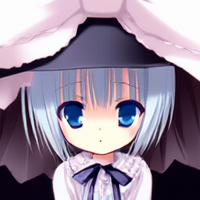
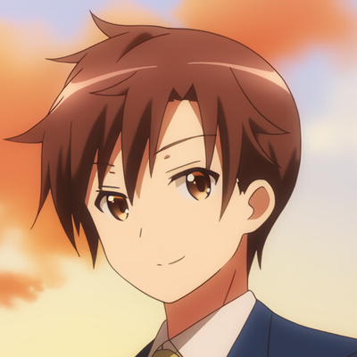
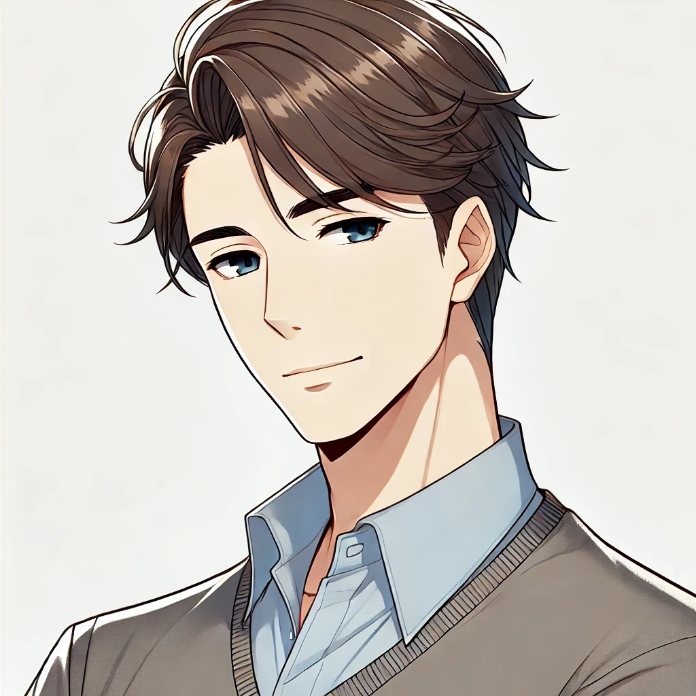

Choose Your Character!
Random Character Buttons
🤔
🤪
😀
☹️
♂️
♀️
Felix
Arianna

Miki
Draxi
Erica
Momo
Runa
Neon Starlight
Kai
Evil Arianna
The Shadow Self

Bro. Nelson
Mimi
Malrick
Joe
Primelle
Celestia
Liam & Kieran

Mark
Princess
Martin
Bruce
Cliff
Me
×
?
🤔:
🤪:
Chat 🗣️
|
Copy Card 📷